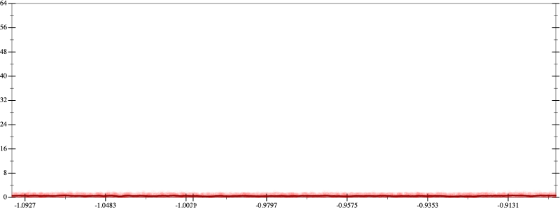
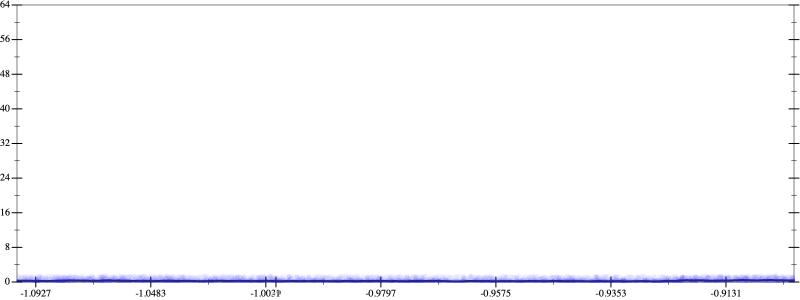
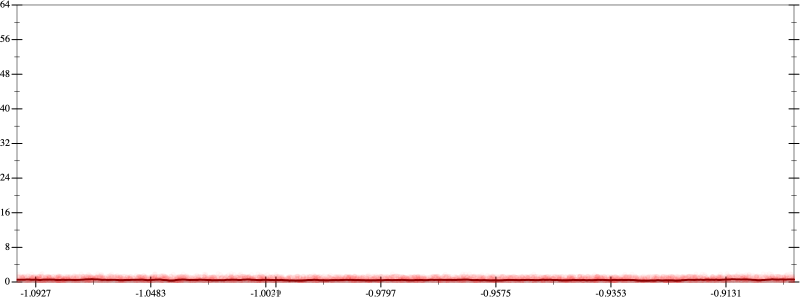
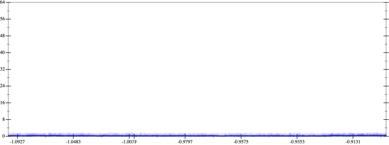

Initial program 0.5
\[\left(\left(\left(\left(\left(1.0 + -6.0 \cdot x\right) + 7.5 \cdot \left(x \cdot x\right)\right) + -3.333333 \cdot \left(\left(x \cdot x\right) \cdot x\right)\right) + 0.625 \cdot \left(\left(\left(x \cdot x\right) \cdot x\right) \cdot x\right)\right) + -0.05 \cdot \left(\left(\left(\left(x \cdot x\right) \cdot x\right) \cdot x\right) \cdot x\right)\right) + 0.001389 \cdot \left(\left(\left(\left(\left(x \cdot x\right) \cdot x\right) \cdot x\right) \cdot x\right) \cdot x\right)\]
Applied simplify0.3
\[\leadsto \color{blue}{\left(\left(x \cdot \left(0.001389 \cdot x\right)\right) \cdot \left(\left(x \cdot x\right) \cdot \left(x \cdot x\right)\right) + \left(x \cdot -6.0 + 1.0\right)\right) + \left(\left(\left(x \cdot x\right) \cdot \left(x \cdot x\right)\right) \cdot \left(0.625 + -0.05 \cdot x\right) + \left(x \cdot x\right) \cdot \left(-3.333333 \cdot x + 7.5\right)\right)}\]
- Using strategy
rm Applied add-cbrt-cube0.3
\[\leadsto \left(\left(x \cdot \left(0.001389 \cdot x\right)\right) \cdot \left(\left(x \cdot x\right) \cdot \left(x \cdot x\right)\right) + \left(x \cdot -6.0 + 1.0\right)\right) + \left(\left(\left(x \cdot x\right) \cdot \left(x \cdot x\right)\right) \cdot \left(0.625 + -0.05 \cdot x\right) + \left(x \cdot x\right) \cdot \color{blue}{\sqrt[3]{\left(\left(-3.333333 \cdot x + 7.5\right) \cdot \left(-3.333333 \cdot x + 7.5\right)\right) \cdot \left(-3.333333 \cdot x + 7.5\right)}}\right)\]
Applied add-cbrt-cube0.3
\[\leadsto \left(\left(x \cdot \left(0.001389 \cdot x\right)\right) \cdot \left(\left(x \cdot x\right) \cdot \left(x \cdot x\right)\right) + \left(x \cdot -6.0 + 1.0\right)\right) + \left(\left(\left(x \cdot x\right) \cdot \left(x \cdot x\right)\right) \cdot \left(0.625 + -0.05 \cdot x\right) + \color{blue}{\sqrt[3]{\left(\left(x \cdot x\right) \cdot \left(x \cdot x\right)\right) \cdot \left(x \cdot x\right)}} \cdot \sqrt[3]{\left(\left(-3.333333 \cdot x + 7.5\right) \cdot \left(-3.333333 \cdot x + 7.5\right)\right) \cdot \left(-3.333333 \cdot x + 7.5\right)}\right)\]
Applied cbrt-unprod0.3
\[\leadsto \left(\left(x \cdot \left(0.001389 \cdot x\right)\right) \cdot \left(\left(x \cdot x\right) \cdot \left(x \cdot x\right)\right) + \left(x \cdot -6.0 + 1.0\right)\right) + \left(\left(\left(x \cdot x\right) \cdot \left(x \cdot x\right)\right) \cdot \left(0.625 + -0.05 \cdot x\right) + \color{blue}{\sqrt[3]{\left(\left(\left(x \cdot x\right) \cdot \left(x \cdot x\right)\right) \cdot \left(x \cdot x\right)\right) \cdot \left(\left(\left(-3.333333 \cdot x + 7.5\right) \cdot \left(-3.333333 \cdot x + 7.5\right)\right) \cdot \left(-3.333333 \cdot x + 7.5\right)\right)}}\right)\]
Applied simplify0.3
\[\leadsto \left(\left(x \cdot \left(0.001389 \cdot x\right)\right) \cdot \left(\left(x \cdot x\right) \cdot \left(x \cdot x\right)\right) + \left(x \cdot -6.0 + 1.0\right)\right) + \left(\left(\left(x \cdot x\right) \cdot \left(x \cdot x\right)\right) \cdot \left(0.625 + -0.05 \cdot x\right) + \sqrt[3]{\color{blue}{\left(\left({x}^{3} \cdot {x}^{3}\right) \cdot \left(7.5 + x \cdot -3.333333\right)\right) \cdot \left(\left(7.5 + x \cdot -3.333333\right) \cdot \left(7.5 + x \cdot -3.333333\right)\right)}}\right)\]
Taylor expanded around 0 0.3
\[\leadsto \left(\left(x \cdot \left(0.001389 \cdot x\right)\right) \cdot \left(\left(x \cdot x\right) \cdot \left(x \cdot x\right)\right) + \left(x \cdot -6.0 + 1.0\right)\right) + \left(\left(\left(x \cdot x\right) \cdot \left(x \cdot x\right)\right) \cdot \left(0.625 + -0.05 \cdot x\right) + \sqrt[3]{\left(\left({x}^{3} \cdot {x}^{3}\right) \cdot \left(7.5 + x \cdot -3.333333\right)\right) \cdot \color{blue}{\left(\left(11.111108888889001 \cdot {x}^{2} + 56.25\right) - 49.999995 \cdot x\right)}}\right)\]
Applied simplify0.3
\[\leadsto \color{blue}{\left(\left(-6.0 \cdot x + 1.0\right) + \left(\left(x \cdot x\right) \cdot \left(x \cdot x\right)\right) \cdot \left(x \cdot \left(x \cdot 0.001389\right) + \left(0.625 + -0.05 \cdot x\right)\right)\right) + \sqrt[3]{\left(\left(x \cdot -3.333333 + 7.5\right) \cdot {\left(x \cdot x\right)}^{3}\right) \cdot \left(\left(56.25 - x \cdot 49.999995\right) + x \cdot \left(x \cdot 11.111108888889001\right)\right)}}\]
- Using strategy
rm Applied pow20.3
\[\leadsto \left(\left(-6.0 \cdot x + 1.0\right) + \left(\left(x \cdot x\right) \cdot \left(x \cdot x\right)\right) \cdot \left(x \cdot \left(x \cdot 0.001389\right) + \left(0.625 + -0.05 \cdot x\right)\right)\right) + \sqrt[3]{\left(\left(x \cdot -3.333333 + 7.5\right) \cdot {\color{blue}{\left({x}^{2}\right)}}^{3}\right) \cdot \left(\left(56.25 - x \cdot 49.999995\right) + x \cdot \left(x \cdot 11.111108888889001\right)\right)}\]
Applied pow-pow0.2
\[\leadsto \left(\left(-6.0 \cdot x + 1.0\right) + \left(\left(x \cdot x\right) \cdot \left(x \cdot x\right)\right) \cdot \left(x \cdot \left(x \cdot 0.001389\right) + \left(0.625 + -0.05 \cdot x\right)\right)\right) + \sqrt[3]{\left(\left(x \cdot -3.333333 + 7.5\right) \cdot \color{blue}{{x}^{\left(2 \cdot 3\right)}}\right) \cdot \left(\left(56.25 - x \cdot 49.999995\right) + x \cdot \left(x \cdot 11.111108888889001\right)\right)}\]
- Using strategy
rm Applied flip3-+0.2
\[\leadsto \left(\left(-6.0 \cdot x + 1.0\right) + \left(\left(x \cdot x\right) \cdot \left(x \cdot x\right)\right) \cdot \left(x \cdot \left(x \cdot 0.001389\right) + \left(0.625 + -0.05 \cdot x\right)\right)\right) + \sqrt[3]{\left(\color{blue}{\frac{{\left(x \cdot -3.333333\right)}^{3} + {7.5}^{3}}{\left(x \cdot -3.333333\right) \cdot \left(x \cdot -3.333333\right) + \left(7.5 \cdot 7.5 - \left(x \cdot -3.333333\right) \cdot 7.5\right)}} \cdot {x}^{\left(2 \cdot 3\right)}\right) \cdot \left(\left(56.25 - x \cdot 49.999995\right) + x \cdot \left(x \cdot 11.111108888889001\right)\right)}\]
Applied associate-*l/0.3
\[\leadsto \left(\left(-6.0 \cdot x + 1.0\right) + \left(\left(x \cdot x\right) \cdot \left(x \cdot x\right)\right) \cdot \left(x \cdot \left(x \cdot 0.001389\right) + \left(0.625 + -0.05 \cdot x\right)\right)\right) + \sqrt[3]{\color{blue}{\frac{\left({\left(x \cdot -3.333333\right)}^{3} + {7.5}^{3}\right) \cdot {x}^{\left(2 \cdot 3\right)}}{\left(x \cdot -3.333333\right) \cdot \left(x \cdot -3.333333\right) + \left(7.5 \cdot 7.5 - \left(x \cdot -3.333333\right) \cdot 7.5\right)}} \cdot \left(\left(56.25 - x \cdot 49.999995\right) + x \cdot \left(x \cdot 11.111108888889001\right)\right)}\]
 
